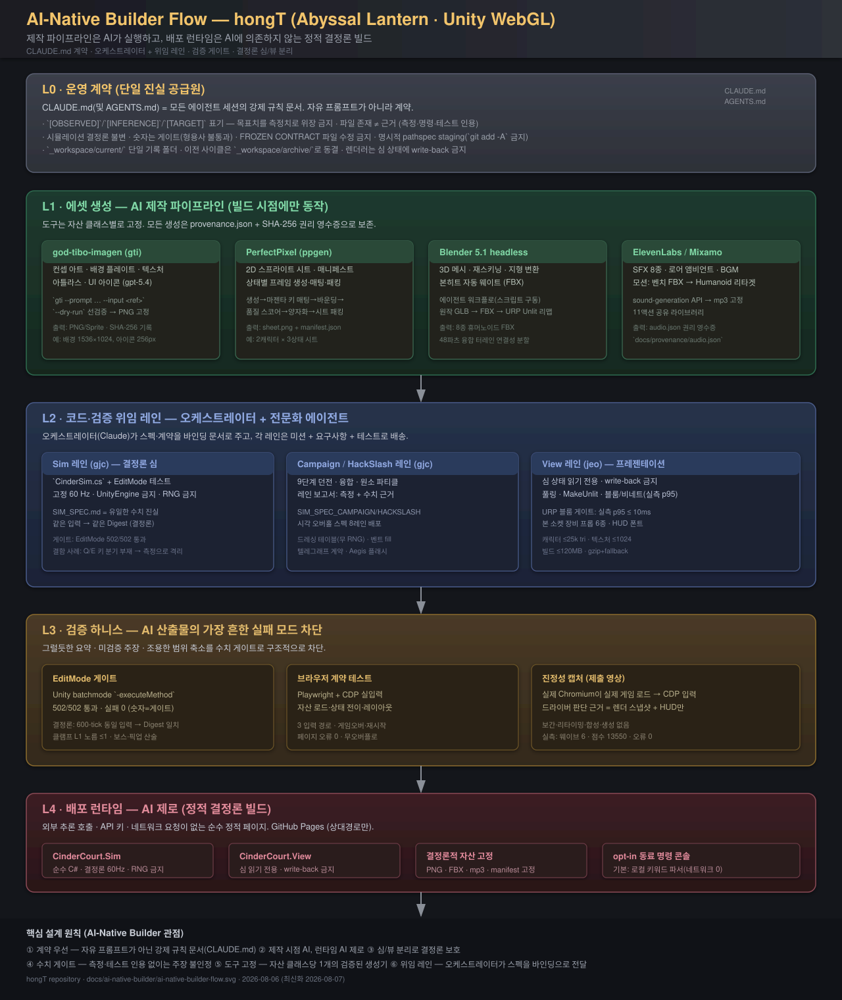

이 문서는 hongT 저장소(
akillness/hongT)가 AI-native builder 관점에서 어떤 플로우로 작업하도록 설계되어 있는지를 정리한다. 즉, "사람이 에이전트를 어떻게 굴리도록 프로젝트가 구조화되어 있는가"를 단일 그림과 계층 설명으로 문서화한다.
CLAUDE.md /
AGENTS.md) · 워크스페이스(_workspace/) · 에셋
파이프라인(docs/*pipeline*.md) · 위임
레인(_workspace/**/engineering/) · 검증 게이트 · 배포
런타임ai-native-builder-flow.svg제작 파이프라인은 AI 에이전트가 실행하고, 배포 런타임은 AI에 의존하지 않는 정적 결정론 빌드다. 이 저장소는 단일 계약 문서가 모든 세션을 강제하고, 오케스트레이터가 전문화 에이전트 레인에 스펙을 바인딩 문서로 위임하며, 모든 주장이 수치 게이트(측정·테스트 인용)를 통과해야만 다음 단계로 승격되는 구조로 설계되어 있다.

L0 운영 계약 (CLAUDE.md · AGENTS.md)
│ 강제 규칙 · 수치 게이트 · 증거 규율
▼
L1 에셋 생성 ──── god-tibo-imagen · perfectpixel · Blender headless · ElevenLabs/Mixamo
│ (빌드 시점에만 동작, provenance + SHA-256 보존)
▼
L2 코드·검증 위임 레인 ──── Sim(gjc) · Campaign/HackSlash(gjc) · View(jeo)
│ 오케스트레이터(Claude)가 스펙을 바인딩 문서로 전달
▼
L3 검증 하니스 ──── EditMode 게이트 · Playwright/CDP 브라우저 계약 · 진정성 캡처
│ (숫자 = 게이트; 형용사는 통과 불가)
▼
L4 배포 런타임 ──── 정적 WebGL · Sim/View 분리 · AI 제로 (opt-in 명령 콘솔 예외)이 프로젝트가 AI-native builder로 동작하는 첫 번째 설계 결정은 자유 형식 프롬프트 대신 강제 규칙 문서를 두는 것이다.
| 계약 조항 | 내용 | 실패 모드 차단 |
|---|---|---|
| 증거 표기 | [OBSERVED] / [INFERENCE] /
[TARGET] — 목표치를 측정치로 위장 금지 |
그럴듯한 요약 |
| 근거 규칙 | "파일이 존재한다는 사실은 근거가 아니다" — 측정·명령·테스트 결과 인용 | 미검증 주장 |
| 결정론 불변 | 시뮬레이션은 결정론적 고정 60Hz · 렌더러는 심 상태에 write-back 금지 | 상태 파괴 |
| 수치 게이트 | "숫자는 게이트다. 형용사는 게이트를 못 통과한다" | 모호한 회고 |
| 동결 계약 | // FROZEN CONTRACT 파일은 위임 에이전트가 수정
불가 |
계약 드리프트 |
| 워크스페이스 | 산출물은 _workspace/current/ 단일 폴더 · 이전 사이클은
archive/ 동결 |
세션 간 충돌 |
| git 규율 | 명시적 pathspec staging · git add -A 금지 |
무단 커밋 |
AGENTS.md는 비-Claude 런타임(Codex · Gemini · OpenCode ·
gjc · jeo)이 같은 규칙을 해석하도록 둔 단일 진입점이다. "두 번째로
흩어진 복사본"을 만들지 않는 설계다.
AI-native builder 관점의 두 번째 결정: 도구를 자산 클래스별로 고정한다. 매번 모델/도구를 다시 고르지 않고, 클래스마다 검증된 생성기를 계약처럼 사용한다.
| 자산 클래스 | 도구 | 산출물 | 근거 |
|---|---|---|---|
| 컨셉 · 배경 · 텍스처 · 아틀라스 · UI 아이콘 | god-tibo-imagen (gti, gpt-5.4) |
PNG · 아이콘 시트 | provenance.json + SHA-256 |
| 2D 스프라이트 시트 · 매니페스트 | PerfectPixel (ppgen) |
sheet.png + manifest.json |
프레임 품질 스코어 |
| 3D 메시 · 재스키닝 · 지형 변환 | Blender 5.1 headless | FBX 8종 · 터레인 파츠 | engineering/reskin/*.json |
| 사운드 · 모션 | ElevenLabs sound-gen / Mixamo 리타겟 | mp3 고정 · 11액션 라이브러리 | docs/provenance/audio.json |
설계 의도 (문서에서 확인된 사례):
no magenta를 강제 → 뒤이은 스프라이트
마젠타 키 매팅과의 팔레트 충돌을 파이프라인 전체에서 원천
차단. 아트 지시가 곧 게임플레이 가독성 사양이 되는 사례.세 번째 결정: 오케스트레이터가 모든 것을 직접 쓰지 않고,
전문화 에이전트 레인에 스펙을 바인딩 문서로 위임한다. 사이클별
레인 런북(gjc-sim-lane.md,
gjc-campaign-lane.md, gjc-hackslash-lane.md,
jeo-view-lane.md)이 그 증거다. 런북은 사이클 종료 시
_workspace/archive/<run-id>/engineering/으로 동결되고
(cycle-1 = 20260805-visible-impact/), 진행 중 레인만
_workspace/current/engineering/에 남는다.
레인 런북의 구조 (예: gjc-sim-lane.md):
LANE: Deterministic Simulation (owner: gjc)
Mission → "CinderSim.cs 하나와 EditMode 테스트를 작성한다.
다른 파일 생성/수정 금지."
Binding docs → SIM_SPEC.md(유일한 수치 진실) + SimTypes.cs(FROZEN CONTRACT)
Requirements → 결정론 600-tick Digest 일치 · 클램프 L1 노름 ≤1 ·
Nova/Ward 경계값 · 픽업 id%3 · 보스 산술 · 공격판정
성능 → 힙 할당 최소화 · LINQ 금지 · foreach 대신 for| 레인 | 오너 | 범위 | 게이트 |
|---|---|---|---|
| Deterministic Sim | gjc | CinderSim.cs + 테스트 |
EditMode 결정론 Digest |
| Campaign | gjc | 9단계 던전 · 융합 · 파티클 | 레인 보고서 수치 근거 |
| HackSlash | gjc | 시각 오버홀 스펙 8레인 | 드레싱 테이블 무 RNG |
| View | jeo | 프레젠테이션(읽기 전용) | 풀링 · MakeUnlit · p95 게이트 |
충돌 시 규율: conflicts.md가 크로스 세션 충돌을
기록하고, "최소 침습 수정"을 선택하며, 비선택 대안과 후속 조치를
명시한다(예: CharacterRosterAnimationTests 컴파일 차단
사례).
네 번째 결정: 검증을 사람의 리뷰가 아니라 실행 가능한 하니스로 만든다. AI 산출물의 가장 흔한 실패 모드(그럴듯한 요약 · 미검증 주장 · 조용한 범위 축소)를 구조적으로 차단한다.
| 게이트 | 도구 | 검증 내용 |
|---|---|---|
| EditMode | Unity batchmode -executeMethod |
502/502 통과 · 실패 0 · 결정론 · 웨이브 산술 · 보스 HP |
| 브라우저 계약 | Playwright + CDP 실입력 | 자산 로드 · 상태 전이 · 레이아웃 무오버플로 · 입력 3경로 · 오류 0 |
| 진정성 캡처 | capture-unity-play.mjs |
실제 Chromium → 실제 게임 → CDP 키 입력 → 실프레임 인코딩 (합성 없음) |
대표적 실패 격리 사례 (AI가 잡아낸 치명적 결함):
HUD가 Q Ember Nova를 광고하지만 45초 자동 플레이에서 Q 입력
82회에 기름 소모 0 → handleKeyDown에
KeyQ/KeyE 분기 부재와 버튼 리스너 미바인딩을
측정으로 격리 → 수정 후 세 입력 경로 전부 복구 검증. "코드를 대신 쓰게
하는 것이 아니라, 사람이 놓치는 것을 측정으로 잡게
하는" 것이 이 팀의 AI 사용 방식이라는 문서 선언이 설계 원칙으로 실증된
사례다.
다섯 번째 결정: 런타임에는 AI가 한 줄도 실행되지 않는다.
CinderCourt.Sim = 순수 C# 결정론 심(60Hz, RNG 금지),
CinderCourt.View = 심 읽기 전용 프레젠테이션.| 파일 | 설명 |
|---|---|
docs/ai-native-builder/ai-native-builder-flow.svg |
플로우 시각화 (L0–L4) |
docs/ai-native-builder/ai-native-builder-flow.md |
본 문서 |
docs/ai-native-builder/ai-native-builder-flow.html |
pandoc HTML 중간 산출물 |
docs/ai-native-builder/ai-native-builder-flow.pdf |
PDF 변환본 (6쪽, git-lfs) |
docs/ai-native-builder/ai-native-builder-flow.png |
SVG 프리뷰 PNG (1280×1520, git-lfs) |
# SVG → PDF 프리뷰용 PNG (필요 시)
rsvg-convert -w 1280 docs/ai-native-builder/ai-native-builder-flow.svg \
-o docs/ai-native-builder/ai-native-builder-flow.png
# MD → PDF (Chrome headless HTML 경로, 한글 폰트 유지)
pandoc docs/ai-native-builder/ai-native-builder-flow.md -f gfm -t html5 \
--standalone --metadata title="AI-Native Builder Flow — hongT" \
-o docs/ai-native-builder/ai-native-builder-flow.html
"/Applications/Google Chrome.app/Contents/MacOS/Google Chrome" --headless \
--disable-gpu --print-to-pdf=docs/ai-native-builder/ai-native-builder-flow.pdf \
--no-pdf-header-footer docs/ai-native-builder/ai-native-builder-flow.html{kind=link}